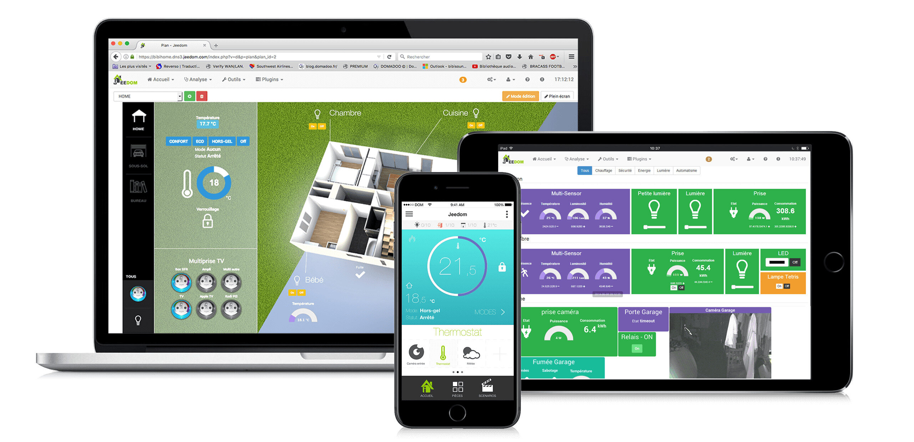

# Présentation du projet Domopoules Présentation réalisé avec Remark.js pour le Dev and Test Day 2020 (Orange) Appuyez sur P pour voir les notes. Puis C pour cloner l'affichage. --- ## Introduction --- ## Agenda 1. Présentation de Jeedom 1. Présentation du raspberry pi zero WH 2. Le problème de la portée 3. Le problème de l'alimentation 4. ... --- ## Présentation de Jeedom  Open source. Français. ??? Système très ouvert : compatible zwave, philips Hue, ikea... TODO graphique Jeedom avec ses plugins --- ### Business model <img src="./logo_jeedom.png" width="10%" alt="Vue écrans Jeedom"> Vente de: - boxs sur étagère - plugins - service de sauvegarde - noms de domaine --- ## Présentation du raspberry pi zero WH <img src="./raspberry_family.jpg" width="80%" alt="Vue écrans Jeedom"> Photo de famille : 0 / 1 / 2 / 3 / 4 --- ## Présentation du raspberry pi zero WH <img src="./raspberry-pi-zero-wh-kubii.jpg" width="50%" alt="Vue écrans Jeedom"> <https://www.kubii.fr/cartes-raspberry-pi/2076-raspberry-pi-zero-wh-kubii-3272496009394.html> ??? Pour ceux qui galèrent avec les arduino / ESP TODO Un vrai linux accessible en SSH, un vrai IDE direct dessus (Vim), Git... On peut écrire directement en python Pas cher : 10-15€, mais il faut y ajouter la carte SD --- ## présentation de gpiozero TODO add screenshots from https://gpiozero.readthedocs.io/en/stable/recipes.html --- ## Le problème de la portée <img src="./jardin_vue_helico.png" width="100%" alt="La maison et le poulailler sur la gauche"> Le poulailler est à TODO mètres de la box domotique zigbee ==> KO z-wave ==> MOUAIS Wi-Fi ==> OK --- ### Mais est-ce lié au protocole Probablement plus au hardware ??? TODO images clés USB et image routeur WI-FI --- ## Le problème de l'alimentation Naivement je pensais que le raspberry pi zero ne consommerait rien et tiendrait qques semaines sur une batterie USB... Que Neni